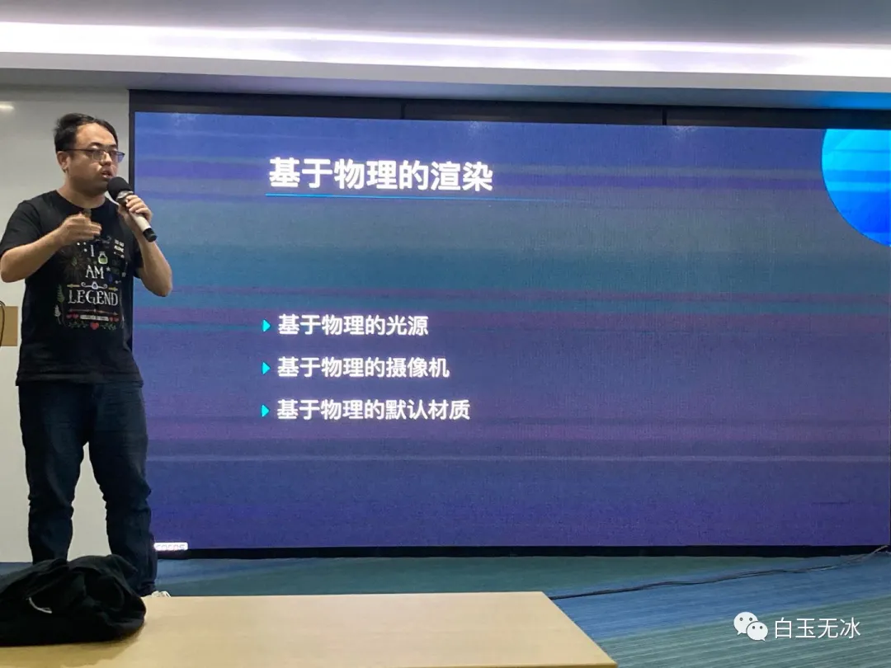
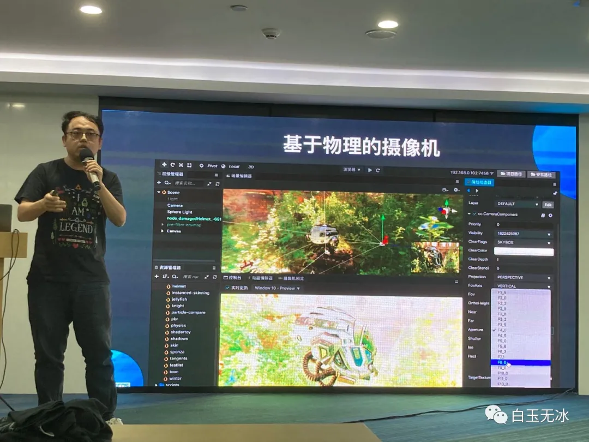
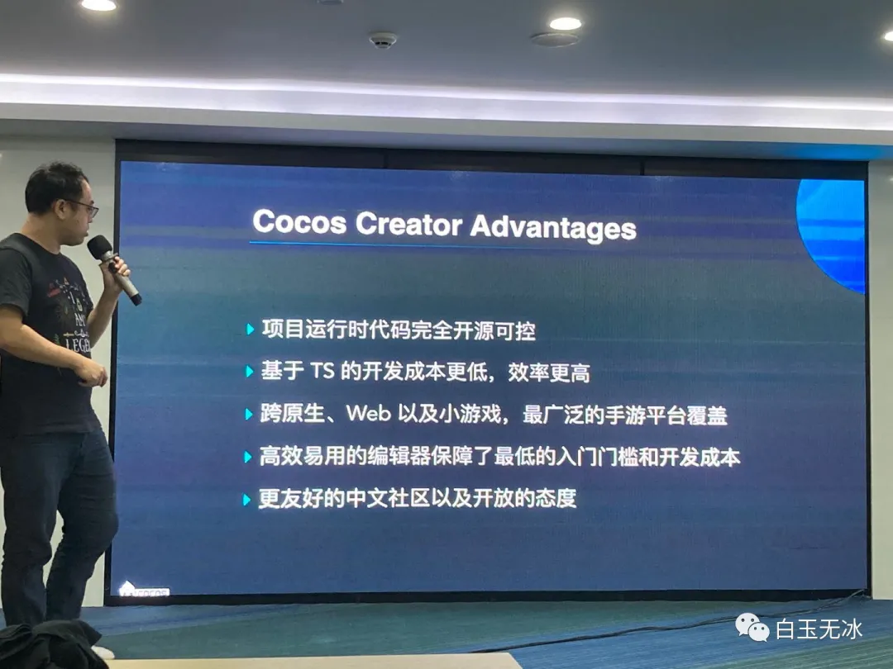
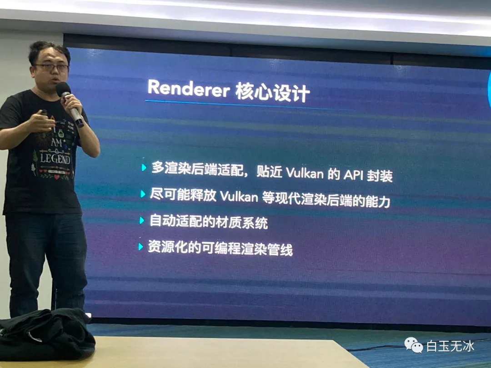
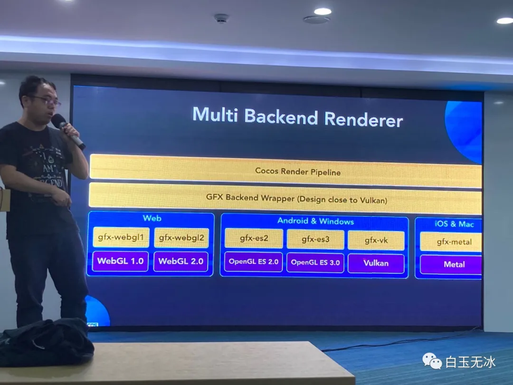

Cocos Creator 引擎规划路线前瞻
Cocos 3D核心设计和路线图
- 引擎100%开源，开发者可以可以针对自己需求自定义引擎
- 新的多平台引擎架构
基于物理的渲染

基于物理的光源

- 根据现实中光源的各种属性来制作光源效果
基于物理的摄像机

- 按照现实中摄像机的参数来设置相机参数，并且设置可以保存，不会因为改一个摄像机导致其他摄像机渲染偏差
Cocos Creator的优势

Cocos Creator面向未来的渲染器设计
 
- 接口尽量贴近Vulkan设计

- 引擎兼容高级特性，Cocos Shader使用GLSL 300 ES规则，开发者只需要写这一种Shader，引擎会针对不同平台编译成各种版本来使用
- 水体效果
Cocos AR


- 使用相机拍到的照片生成游戏地图，并在此之上进行游戏

- 使用可编程渲染管线渲染出的游戏画面